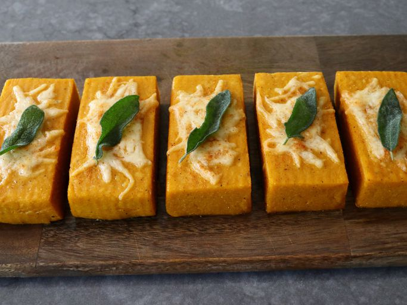

We’ve come to that time of the year when people like me try to think of ways to sneak pumpkin into recipes, whether they need it or not, which is what inspired this beautiful to look at, and very delicious to eat, baked pumpkin polenta. Not only was this tasty, but it was also textually perfect, and even if you decide not to use the pumpkin, this baked polenta technique is one every good cook should master.
I referred to this as a sort of magic trick in the video, since it always amazes me how something so soft and runny, is somehow able to hold its shape once chilled and baked, but happily it does. If you omit the pumpkin, just add in another cup and a half of water, and proceed as shown. Either way, this makes for a gorgeous and satisfying side dish, or main course, and I really do hope you give it a try soon. Enjoy!
Add olive oil to a saucepan set over medium-high heat; add butter, and heat until melted. Toss in sage leaves and fry until they are dark green and have stopped bubbling, 20 to 30 seconds. Turn off the heat; remove sage leaves to a paper towel-lined plate and set aside. Fried sage leaves can be stored in the refrigerator and used to garnish the tops later.
Add pumpkin to the pan, pour in water, and turn heat to high. Whisk and bring to a boil. Season with salt and pepper.
With mixture boiling, slowly sprinkle in cornmeal, whisking constantly. Reduce heat to medium-low, and cook, stirring occasionally, until cornmeal is creamy, soft, and no longer gritty, about 25 minutes.
Turn off heat; add cayenne, milk, and Parmigiano Reggiano cheese. Whisk thoroughly until evenly combined.
Generously grease a 9x9-inch cake pan with olive oil; spread polenta evenly into the pan. Let cool to room temperature. Wrap and chill in the refrigerator for at least 3 hours.
Preheat the oven to 425 degrees F (220 degrees C). Invert cold, firm polenta onto a cutting board and cut into 8 equal portions.
Transfer to a lined baking sheet, and top each piece with grated Monterey Jack cheese. Sprinkle tops with paprika or cayenne, if desired.
Bake in the preheated oven until polenta is heated through, and the edges are turning golden-brown, about 30 minutes. Garnish tops with fried sage and serve.